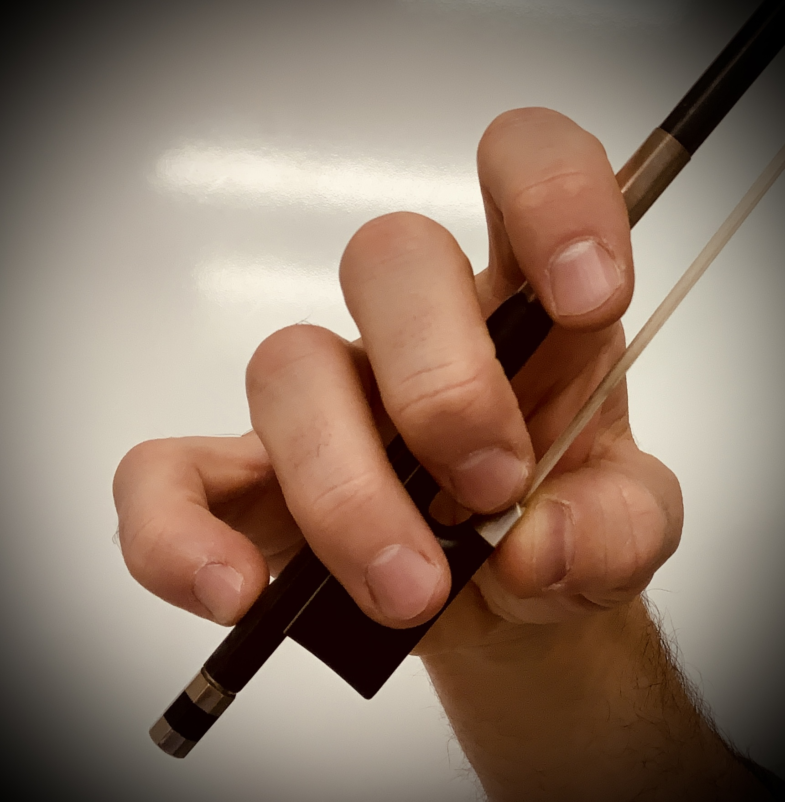

Beginning bow hold

The beginner bow hold is similar to the one professionals use with one big exception. The thumb is placed on the outside of the ferrule (the silver part near the hair)
and close to the hair. Some teachers will suggest putting part of your thumb on the hear to feel the springiness of the bow. Just take care in pointing out that
this is usually the only place you can actually touch the hair!
Bow holds are tricky for anyone, especially for those with small fingers. Younger students are working on refining fine motor skills and asking them to make a bow hold
puts a huge complication on the table. Patience and repetition are key.